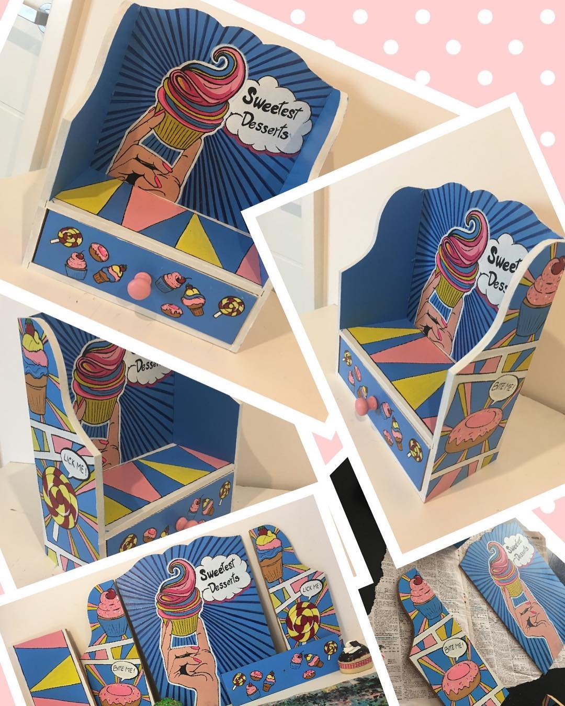
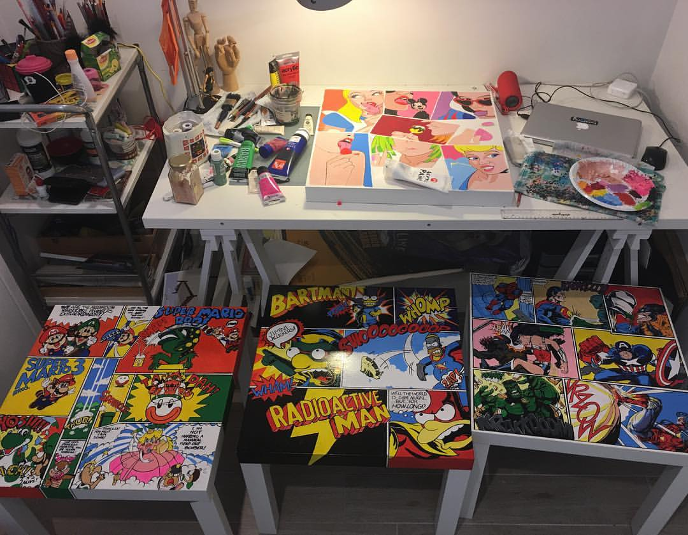
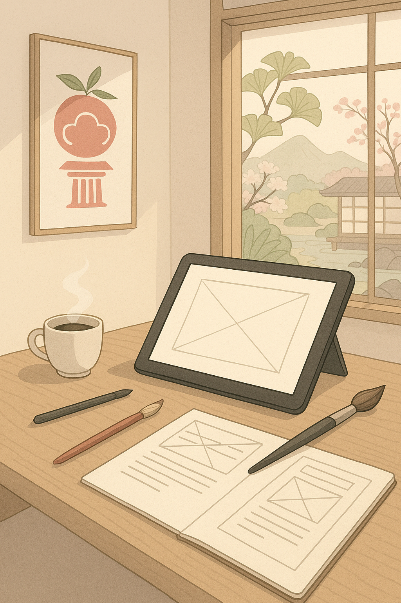

PROJECTS
I shape interfaces and illustrations that feel as natural as turning pages in a book.
THIS PORTFOLIO
I created a Wireframe Portfolio to showcase my work and identity. From structure to style, I shaped every detail using Balsamiq.

POP ART ON WOODEN HOLDER
I assembled and painted this retro-inspired wooden piece by hand with acrylic. The structure is built from scratch and decorated with bold pop art -retro figures — a tribute to colour, culture, and craft.

TABLES THAT TELLS STORIES
What began as simple furniture became a canvas. These tables now hold vibrant acrylic stories — each brushstroke adding character to the wood.

TO BE CREATED
A space reserved for future experiments; design is a journey, not a destination.